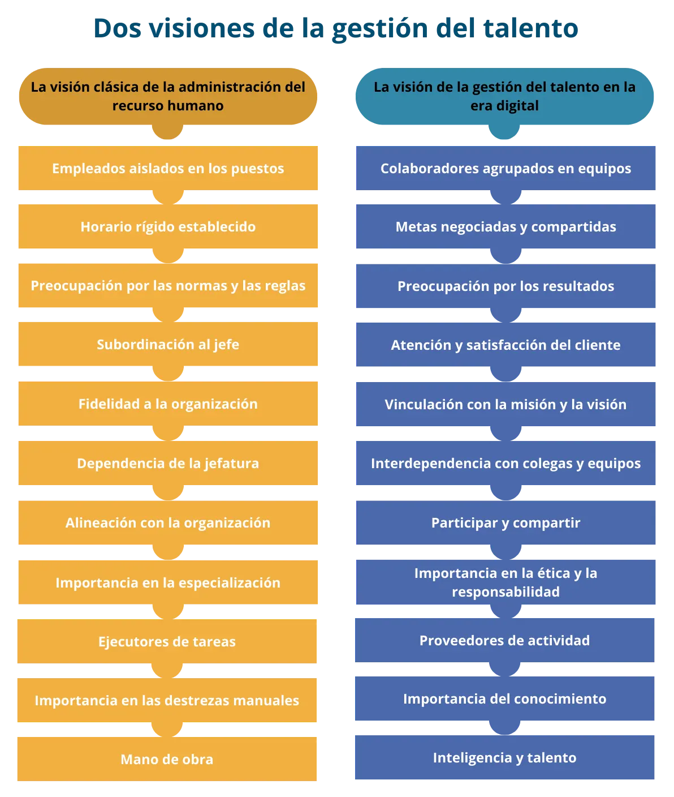
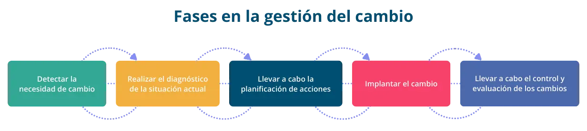
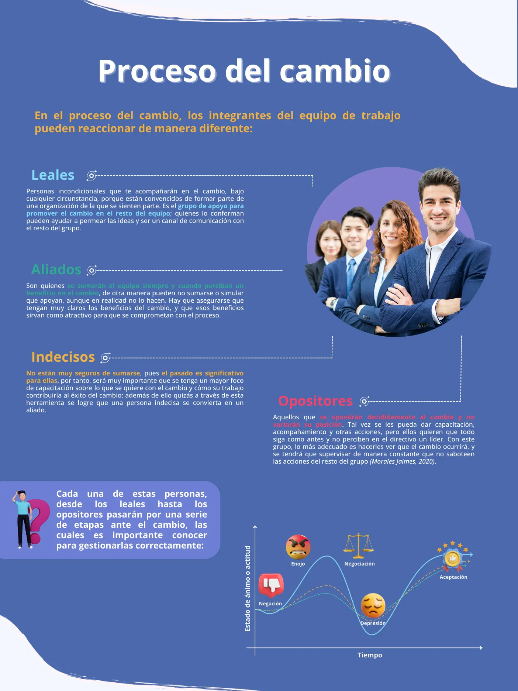
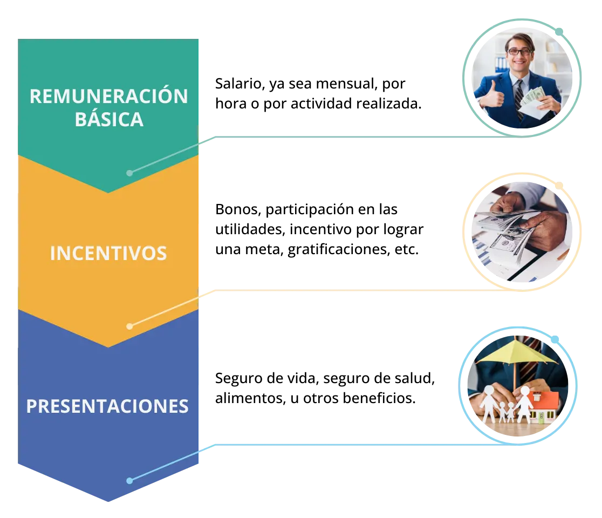
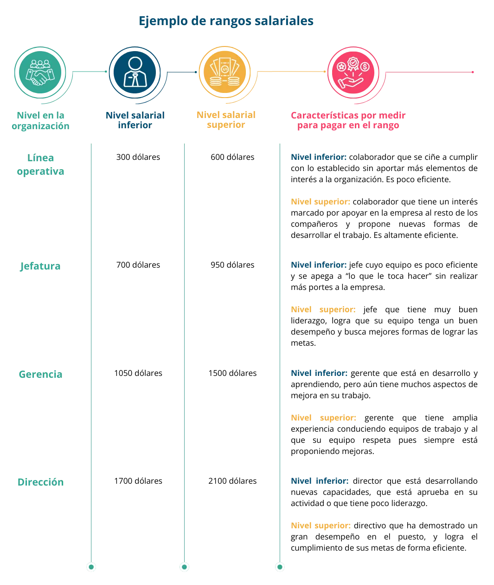
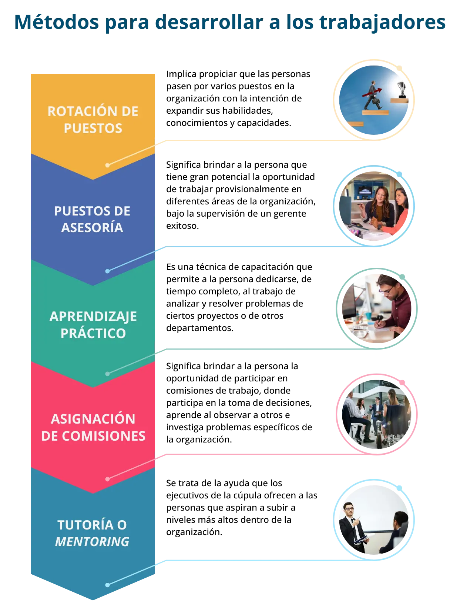
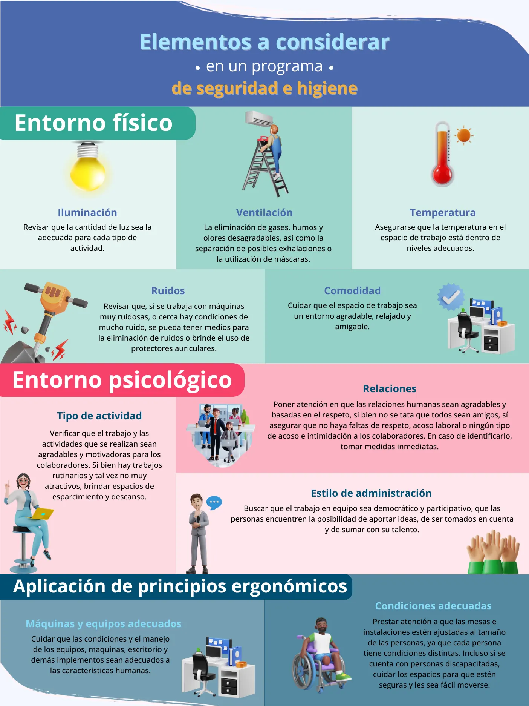

En los años noventa, las tres principales empresas de Detroit generaron ingresos de 250,000 millones de dólares con 1.2 millones de empleados contratados y una capitalización de mercado combinada de 36,000 millones de dólares. En tanto, para 2014, las tres principales empresas de Silicon Valley tuvieron ingresos de 247,000 millones de dólares, muy similares a las de Detroit en los noventa, sin embargo, solamente tenían 137,000 empleados, es decir, poco más del 10% de los empleados de las empresas de Detroit en los noventa, y alcanzaron una capitalización de mercado de 1.09 billones de dólares (Manyika & Chui, 2014).
Este fenómeno evidencia que la digitalización de las empresas ha propiciado varios beneficios operativos: uno de los más evidentes es la posibilidad de agilizar y automatizar gran parte de los procesos operativos. Tal beneficio debe estar acompañado de procesos de gestión del talento humano distintos a los que solían tenerse en otras épocas. Antes, la actividad de dirigir implicaba referirse a las personas como “recurso humano”; hoy se tiene claro que las personas no son un recurso, sino entes con talento que aportan sus habilidades y conocimientos a las empresas.
El mundo de las empresas ha cambiado, por tanto, la gestión de la relación con las personas en ella debe evolucionar en todas sus dimensiones: cómo identificar al talento, cómo atraerlo, cómo motivarlo, cómo retenerlo para que crezca junto con la empresa, cómo remunerarlo y cómo se liderean los esfuerzos para que todos juntos logren las metas de la empresa.
Schwab (2017) señala que los líderes empresariales y los altos ejecutivos deben comprender que la disrupción afecta a la demanda y la oferta de su negocio. Esto, a su vez, debe obligarlos a desafiar los supuestos de sus equipos operativos y a encontrar nuevas formas de hacer las cosas. Los líderes deben ser capaces de modificar sus estructuras mentales y conceptuales y sus principios de organización; en resumen, tienen que innovar continuamente.
En este apartado, se abordarán aquellos elementos que se deben considerar para ser capaz de gestionar adecuadamente el talento humano en la era digital.
La gestión del talento humano en la era digital es un conjunto integrado de procesos que cuida al capital humano de las organizaciones, con el propósito de atraer, retener y desarrollar a los empleados y colaboradores en un mundo cada vez más digitalizado. Implica el uso de tecnología y estrategias digitales para mejorar la eficiencia y la efectividad de la organización sin descuidar el bienestar de los empleados.
La digitalización de las funciones de gestión de talento se ha simplificado y aporta beneficios tangibles para las organizaciones como: mejorar la experiencia del personal; eficientar la toma de decisiones clave para los empleados y colaboradores; contar con información del negocio en línea; simplificar procesos; reducir costos operativos; agilizar la introducción a nuevos mercados; habilitar y acelerar las funciones y adquisiciones y, mitigar los riesgos (Salafia, 2024).
El término “era digital” se refiere a la época actual y se caracteriza por el uso de tecnologías que permiten la generación, distribución, consulta, almacenamiento y uso de datos e información. La era digital puede tener muy distintos nombres y conceptos relacionados, por ejemplo, revolución digital, era de las tecnologías de la información y la comunicación (TIC) y algunos otros más actuales, como industria 4.0. Sin importar el nombre que le asigne, este fenómeno tiene grandes implicaciones para sociedad y, en consecuencia, para las empresas y sus colaboradores.
Las empresas funcionan gracias a las personas que en ellas colaboran, pero no por el esfuerzo físico que puedan realizar, como por ejemplo, martillar, apretar tornillos y tuercas o limpiar un espacio. En el pasado, las personas eran muy importantes en las empresas porque podían realizar estas tareas físicas. Antes, en una fábrica donde el trabajo se hacía en serie y manualmente, muchas personas realizaban tareas de manera repetida para obtener productos iguales, todos estandarizados. Por ejemplo, en el pasado se construían autos de forma manual y cada persona tenía una labor específica (poner las llantas, asegurarse de colocar los asientos, fijar las puertas) que realizaba de forma organizada y bien estructurada. Actualmente el trabajo manual está siendo reemplazado por máquinas y robots; de hecho, el número de unidades de robots instalados en el mundo para automatizar procesos industriales va en claro ascenso.
Las personas en las organizaciones siguen siendo indispensables, pero ya no para realizar trabajo manual sino de otro tipo; se necesitan personas con habilidades distintas a las que se solían requerir en el pasado. Algunas de las habilidades que hoy se identifican como indispensables son: creatividad, pensamiento crítico, resolución de problemas, cooperación, negociación, toma de decisiones, manejo de sí mismo, resiliencia, comunicación, respeto por la diversidad, empatía y participación (UNICEF, 2020).
Los equipos de trabajo en las empresas ahora son equipos que deben resolver problemas, tener creatividad para diseñar nuevos productos o nuevas maneras de hacer negocio. Entonces si cambió el trabajo que las personas realizan en las empresas, también debe evolucionar la forma en la que las empresas gestionan el talento humano. Los principales cambios que ha habido en la gestión del talento humano son:
Pero lo mencionado aquí tiene implicaciones más profundas. Hasta hace no mucho la relación entre los miembros de la empresa (trabajadores) y las organizaciones se consideraba antagónica y conflictiva. Un claro ejemplo eran (y en muchos casos siguen siendo) las luchas entre patrones y sindicatos en donde se consideraba ampliamente que los objetivos de las organizaciones (como el lucro, la productividad, la eficacia, la maximización de la aplicación de recursos materiales y financieros, la reducción de costos) eran incompatibles con los objetivos individuales de las personas (como mejores salarios y prestaciones, comodidad en el trabajo, tiempo libre, seguridad en el trabajo y empleo, desarrollo y progreso personal). Bajo esta premisa la relación que se generaba era de un ganador y un perdedor, en donde quien obtenía algún beneficio ganaba por encima de la otra parte (Chiavenato, 2009). Pero el mundo no puede continuar con esta lógica, ya que en la medida en la que la empresa se beneficia, los empleados se beneficiarán también, y viceversa; mientras los colaboradores están cómodos, satisfechos y comparten los valores de la empresa, ésta crecerá y obtendrá mejores beneficios.
De eso se trata la gestión del talento humano, ya que los seres humanos no son un recurso, administrable como el dinero o las máquinas. Las personas son quienes hacen a las empresas, deciden, actúan y realizan tareas en nombre de la organización, por lo que en la medida en la que una parte está bien, la otra también lo estará.
En el pasado la definición de administración de recursos humanos aludía a un conjunto de políticas y prácticas necesarias para dirigir los aspectos administrativos en cuanto a las “personas”, pero sin considerar aspectos más de fondo relacionados con involucrar a las personas en la organización. Mientras que hoy la definición se acerca más a ser la actividad que construye talentos por medio de un conjunto integrado de procesos, y que cuida al capital humano de las organizaciones, dado que es el elemento fundamental de su capital intelectual y la base de su éxito.
Así, hay dos visiones de la gestión del talento humano en las organizaciones de hoy: una basada en las prácticas tradicionales, en la manera de conducir a los equipos de manera vertical y apegados a reglas y políticas que ayudan a producir; otra más actual basada en la economía digital, en la que la gestión del talento humano involucra a las personas en la construcción integral de la empresa, teniendo claro que las ideas y el talento de la gente es el verdadero diferenciador de la empresa.
En resumen, la visión de la administración de recursos humanos se basa en asumir que las personas son entes pasivos, es decir, recursos que se pueden administrar como si fueran dinero o máquinas, y eso se debe a que se esperaba que hicieran un trabajo que es fácilmente reemplazable por otro “recurso” igual. En tanto, la visión de gestionar el talento humano asume que las personas aportan talento, ideas, pensamientos, formas de actuar, diferentes, por lo que cada persona es distinta y se tienen que crear las condiciones adecuadas para que aporte su talento al equipo.
Ejercicio de reflexión: observar los dos vídeos cuyos enlaces se consignan abajo (es suficiente ver 3 o 4 minutos de cada uno).
Vídeo 1: https://youtu.be/c7XBh6uuiD4
Vídeo 2: https://youtu.be/myaCbs2ScLw
Hacia principios del año 2000, en Suecia se publicó un libro denominado Funky Business, en cuyas primeras páginas se lee el siguiente texto:
“Estaban en lo cierto los que suscribieron la teoría marxista según la cual los trabajadores debían poseer los bienes más preciados, los medios de producción clave. Ahora es así; aunque los poseamos de forma individual, más que colectiva. Tal vez siempre fue así y no fuimos capaces de darnos cuenta. Los trabajadores controlan los principales medios de producción. La primera parte de la revolución ha concluido. En una empresa moderna, el 70- 80% del trabajo de los empleados —a menudo más— depende de su intelecto. El principal medio de producción es pequeño, gris y pesa alrededor de 1.300 gramos. Se trata del cerebro humano” (Nordstrom & Ridderstrale, 2000).
El concepto central del texto es que el cerebro de las personas es el principal medio de producción hoy en día. La idea es que la mente de la gente es la que produce la riqueza en las organizaciones, ya que de la mente humana provienen las ideas nuevas, revolucionarias. Sin embargo, no basta con tener personas en las organizaciones para que el cambio ocurra, ya que las personas en muchas ocasiones se resisten al cambio.
Cuando en una empresa se busca innovar o implementar una nueva tecnología, suelen existir resistencias a cambiar por parte de los colaboradores. La implementación de nuevas tecnologías encuentran respuestas de rechazo como “siempre se ha hecho así y ha funcionado”, o cuando se incorpora personas a la organización que traen ideas distintas, se pueden hallar expresiones como “tiene poca experiencia y por ello propone eso”.
La resistencia al cambio es una circunstancia relativamente natural que encuentra su origen en aspectos como: la incertidumbre que generan los cambios; poca comunicación acerca de lo que se pretende lograr o las metas que se buscan alcanzar; pérdida de control o poder para los empleados que se sienten afectados por los cambios; desconfianza en la dirección de la empresa o, incluso, apego emocional a los procesos, tecnologías o productos anteriores, el cual puede generar temor a la pérdida de aquello que es familiar (Chávez, 2022).
Por ello cuando en una organización se busca realizar cambios, es importante llevar a cabo un proceso estructurado y bien organizado que ayude a reducir la resistencia al cambio por parte de los colaboradores, y que allane el camino para lo que viene.
Para que un cambio tecnológico logre ser exitoso, casi siempre será necesario realizar un rediseño de la estructura organizativa, es decir, de la empresa y de cómo están todos organizados. Lo anterior exige una distribución distinta del trabajo y de la autoridad, brindar capacitaciones a las personas involucradas y sensibilizar a todos respecto a los beneficios que se espera obtener (Ruiz Mercader, Ruiz Mercader, Martínez de León, & Peláez Ibarrondo, 1999). Por tanto, es necesario realizar estos cambios de forma ordenada.
Fase 1. Detectar la necesidad del cambio. Lo primero que un directivo debe tener claro son los motivos que llevan a buscar un cambio en la empresa. Los cambios pueden deberse a aspectos tecnológicos necesarios a fin de ser más competitivos en el mercado, pero la mayoría de las veces la implementación de una tecnología no termina resolviendo las problemáticas de las empresas si éstas no están adecuadamente organizadas; por tanto, otros motivos por los que se puede buscar el cambio son: la empresa ha perdido mercado, los ingresos han disminuido de manera importante o hay nuevos competidores.
Fase 2. Realizar un diagnóstico de la situación actual. Previo a promover cualquier cambio en la empresa, es importante revisar detalladamente cómo se encuentra la empresa y, sobre todo, los aspectos en los que puede influir el cambio que se promoverá. Habrá que revisar los procesos de la empresa, la tecnología actual, los recursos (financieros, materiales, y técnicos) con los que cuenta, las capacidades del talento humano, es decir, si están debidamente capacitados, el tiempo del que se dispone para el cambio. Hay que estar seguros de todos los detalles, para que entonces se pueda saber si la propuesta de cambio es la más adecuada.
Fase 3. Planificar acciones. Ya que se ha realizado el diagnóstico, se debe elaborar un plan bien organizado que indique:
Para definir las actividades a realizar, el tiempo que implica, quién es responsable, qué producto genera cada actividad y quiénes en el equipo de trabajo colaborarán en dicha actividad, se propone utilizar un formato de gráfica de Gantt.
Con el plan elaborado, es importante informar a todos los involucrados acerca de éste, de las razones por las que es necesario llevar a cabo los cambios en la empresa, discutirlo con todos los miembros del equipo y estar abierto a escucharlos, recibir opiniones, quejas, sugerencias y temores.
Este es, tal vez, de los puntos más importantes del proceso: tener un diálogo abierto con todos. Realizar adecuadamente tal diálogo, estar receptivo a las opiniones e incorporar las opiniones, puede ser la clave del éxito o del fracaso. Finalmente, en esta etapa se deberá lograr un consenso en el equipo, que defina con claridad, para todos, el rumbo a seguir.
Fase 4. Implantar el cambio. El siguiente paso es realizar las acciones para promover el cambio. Se debe tener claro que ningún plan se cumple al pie de la letra, todos los planes enfrentan retos e imprevistos. Por ello será muy importante organizar reuniones regulares con el equipo de trabajo, para monitorear:
Estas reuniones deben ser breves, rápidas y solamente para informar avances y si se están presentando dificultades. Algunas técnicas recientes de gestión de proyectos hablan de reuniones de no más de 15 minutos a la semana, en la que todos estén de pie para evitar que estando sentados se prolongue la reunión.
Fase 5. Control y evaluación de los cambios. Una de las claves del éxito para el desarrollo de las empresas es estar siempre pendientes de lo que hay nuevo en el mercado y buscar el cambio; sin embargo, si al momento de implementar un plan y de haber logrado cambiar una vez, no se monitorean los resultados al final ni se genera una discusión con las personas del equipo de trabajo (para conocer cómo se sienten, qué retos enfrentaron, cómo puede mejorar hacia futuro nuevas implementaciones, etcétera) entonces será muy difícil tener la confianza plena del equipo para cambiar más adelante.
A las personas les gusta que se les reconozca su trabajo y esfuerzo, sentirse parte de un equipo y saber que su opinión cuenta, por tanto, implementar una nueva tecnología, no termina cuando ya está funcionando. Será necesario tener reuniones para conocer las impresiones y los puntos de vista de las personas, y que todos perciban que son parte de un gran equipo donde cada opinión es importante. Y cuando se busque implementar nuevas tecnologías o nuevos cambios, habrá que considerar las recomendaciones y puntos de vista previos, pues cuando las personas vean en los nuevos planes sus opiniones e ideas, su resistencia al cambio será menor.
Hay 5 etapas en el proceso de una persona al enfrentar el cambio (ilustración 2): la negación total, el enojo, la negociación consigo mismo o con las autoridades de la empresa, la depresión, en la que siente que no tiene caso continuar con los esfuerzos, pero de la que poco a poco logrará superarse para aceptar el cambio, encontrarse en una nueva forma de realizar su trabajo y asumirse en el equipo.
Cada persona maneja el cambio y las etapas de manera diferente. El leal también enfrentará esas etapas, menos marcadas y con menos impacto en la organización, contrario al opositor que las vivirá con mayor énfasis; sin embargo en todos los casos se necesitan acciones y reconocer que cada persona necesita distintos apoyos e incentivos en el proceso de cambio.
La gestión del talento humano en las empresas no solo se circunscribe a aquellos momentos en los que hay cambios e implementación de nuevas tecnologías. La gestión de las personas en un grupo de trabajo es muy importante para que el rendimiento del equipo siempre se mantenga en los niveles óptimos que la empresa necesita.
Mas, coordinar grupos de trabajo no es solo pagar sueldos y compensaciones o verificar los horarios de llegada y salida. La gestión del talento humano es mucho más amplia y requiere de una colaboración y cooperación de todas las áreas de la empresa.
Tradicionalmente la gestión del talento la realizaba el área de recursos humanos, que se debía encargar de ver que todas las personas en la empresa estuvieran satisfechas y cumplieran con los lineamientos establecidos; sin embargo, las nuevas tendencias en la gestión del talento implican que cada jefe o supervisor debe involucrarse en la gestión de su equipo de trabajo y conocer a detalle los elementos que implican gestionar el talento.
De acuerdo con (Chiavenato, 2009), la gestión del talento humano es un conjunto integrado de procesos dinámicos e interactivos que deben ser gestionados a lo largo y ancho de la empresa, en todos los niveles, esto es, que no dependen solamente del área de talento humano.
El reclutamiento se refiere a buscar a candidatos para ocupar los puestos vacantes de la organización; atraer un talento a la empresa implica también adquirir un conjunto de competencias necesarias para el éxito de la organización y para aumentar la competitividad del negocio. Por ello, elegir a la persona ideal para cada puesto es un esfuerzo estratégico, ya que si la persona no es la adecuada para el puesto, el rendimiento de la organización y del equipo de trabajo se verán mermados. Así es de suma importancia saber en dónde anunciar el puesto de trabajo que se busca.
Hay dos opciones dónde buscar al personal requerido: dentro de la propia empresa, viendo si el talento actual cuenta con las competencias deseadas o puede desarrollarlas en el corto plazo, o fuera de la empresa.
La mayoría de los empleados llegan por recomendación o por contactos cercanos, sin embargo cuando se busca a una persona para un cargo hay muchas maneras de difundir la vacante: anuncios en diarios y revistas, utilizar sitios web, utilizar redes sociales como linked in, recurrir a agencias de reclutamiento, establecer contactos con escuelas, universidades y agrupaciones, carteles o anuncios en lugares visibles, por recomendación de los propios trabajadores, consulta al archivo de candidatos y banco de datos de candidatos.
Una vez identificadas las personas candidatas, se inicia la fase de selección de personal, la cual funciona como un filtro en el que ingresa a la empresa aquella persona que cuenta con las características que la organización requiere. Un antiguo concepto popular afirma que la selección consiste en la elección precisa de la persona indicada para el puesto correcto en el momento oportuno (Chiavenato, 2009).
Para seleccionar adecuadamente a una persona en el puesto indicado es necesario saber cuáles son las características deseables de la persona que se busca. No todas las características deseables tienen la misma importancia y peso; habrá condiciones y características deseables pero que no son indispensables para el puesto, mientras que otras sí lo son. Para realizar este proceso se propone usar el formato de calificación postulantes (una serie de hojas para calificar a las distintas personas a evaluar para un mismo puesto, donde se pueden determinan las características deseables del puesto y establecer un peso o relevancia específica a cada una de esas características).
El trabajo en las empresas se debe realizar de manera ordenada y estructurada. Cuando una empresa es nueva organizándose, todos los colaboradores se centran en una actividad específica y descuidan sus funciones porque “hay algo urgente” o “más importante”, pero así no son los equipos de trabajo maduros y bien organizados. En los grupos de trabajo profesionales cada integrante tiene su labor, su función, su responsabilidad, y se le mide por su desempeño en esas tareas. Esto exige una capacidad de liderazgo importante, ya que no solo es cuestión de los trabajadores centrarse en sus funciones y tareas, también lo es del líder saber que no todo el equipo tiene que enfocarse en una sola tarea o actividad.
También se requiere de un equilibrio. En las empresas grandes cada persona tiene un conjunto de responsabilidades delimitadas; empero, en las empresas pequeñas, las funciones se entremezclan y comparten, los equipos son flexibles y adaptables a las necesidades y condiciones del mercado. Si el mundo es cambiante, y todo va variando, por qué los puestos de trabajo deberían ser rígidos. Así, al diseñar un puesto de trabajo se debe buscar que tenga las siguientes características (Chiavenato, 2009):
Para definir un puesto se propone el uso de la herramienta formato contenido del puesto.
Este proceso constituye los elementos fundamentales para incentivar y motivar a los trabajadores de la organización, siempre que los objetivos organizacionales sean alcanzados y los objetivos individuales sean satisfechos (Chiavenato, 2009).
Las personas trabajan por una remuneración, eso es lo justo. Hoy en día, por pequeño que sea el trabajo desempeñado, se debe recibir una remuneración. La remuneración de las personas se integra por tres elementos (Chiavenato, 2009):
Sin embargo, hay otro tipo de remuneraciones no necesariamente financieras, es decir, a veces los empleados no solo esperan beneficios económicos sino también contar con oportunidades de desarrollo en el puesto de trabajo; ser reconocidos por los compañeros y por el jefe; sentir seguridad en el empleo, libertad y autonomía en el trabajo; poder contar con algunas oportunidades para atender aspectos personales, y, más recientemente después de la pandemia, poder contar con la posibilidad de realizar parte del trabajo de manera remota (Chiavenato, 2009).
En todo caso la remuneración que reciba cada colaborador debe ser justa y equitativa con relación al puesto que desempeña y su nivel de responsabilidad. Todos en una empresa se enteran, tarde o temprano, lo que el resto del equipo percibe por ingreso; por tanto, se deben manejar salarios adecuados para cada puesto de trabajo en función de lo que cada uno de los colaboradores aporta, de otra manera se generará un desincentivo para el equipo, ya que puede haber personas que perciban que se les paga menos, comparativamente con el resto de los colaboradores.
Una práctica común en distintas empresas es definir niveles de puesto: por ejemplo, nivel de línea operativa, de jefes, de gerentes y de dirección. A cada uno de estos puestos se les asignan rangos salariales, inferiores y superiores, y los salarios de cada persona se asignarán dependiendo el rango salarial del nivel en el que está, sus capacidades personales y desempeño en el trabajo. En el cuadro 1, a manera de ejemplo, se muestran niveles inferiores y superiores y el criterio a seguir para asignar el salario en cada rango. Una recomendación a los directivos y dueños de pequeñas empresas es que traten de que todos sus colaboradores entren en estos rangos, sin importar relaciones de amistad o familiar. También los dueños o directivos deben incluirse en la misma tabla, a fin de demostrar en su equipo que son uno más del grupo.
Al cuadro anterior, se le podría agregar una columna relacionada con los incentivos y las prestaciones, a fin de poder determinar cada uno de ellos en función del nivel de puesto. Finalmente, una práctica que debe evitarse es pagar salarios inferiores a las mujeres; de acuerdo con estudios bien documentados, el salario requerido por las mujeres es 16.4% menor al de los hombres para los mismos puestos de trabajo (Bumeran, 2022), (OIT, 2020) y (CEPAL, 2020); por tanto, es importante que en las pequeñas y medianas empresas se concientice la importancia de remunerar adecuadamente el trabajo de todos y todas las colaboradoras.
Se ha mencionado en este módulo que las personas son la parte más importante de las empresas hoy en día, pues con su mente y talento aportan grandes ideas y posibles innovaciones futuras a las organizaciones. Para lograr esto, es muy importante apoyarlas a fin de que se desarrollen y mejoren su desempeño y labor; un colaborador que tiene expectativas de desarrollo personal, se preocupará por ayudar a que la empresa crezca. Así, los procesos de desarrollo incluyen al menos dos aspectos que se complementan: la capacitación y el desarrollo de las personas.
La capacitación comúnmente se apega a los cursos que la empresa pequeña encuentra y a los que invita a que sus colaboradores asistan. Mas la capacitación debe ser un proceso ordenado y bien estructurado. Lo primero es realizar un diagnóstico de necesidades de capacitación en la empresa, a partir de ello diseñar un programa de formación adecuado al equipo de trabajo, y evaluar los resultados de éste.
Para realizar un diagnóstico de necesidades de capacitación en su equipo, se le recomienda usar el Formato de diagnóstico de necesidades de capacitación.docx
El siguiente paso, es desarrollar a las personas. Sin lugar a duda, uno de los aspectos más importantes de la administración moderna de personal es procurar el desarrollo mutuo y continuo de las organizaciones y de las personas. Si la persona crece y se desarrolla, la empresa lo hará también, y para ello existen distintas herramientas o metodologías (Chiavenato, 2009).
Cualquiera que sea la herramienta que se elija, se debe tener claro cuál es el objetivo que se busca alcanzar al desarrollar a las personas en una nueva competencia o habilidad y se debe discutir con las personas acerca de su plan de desarrollo.
La organización viable es aquella que no sólo consigue captar y aplicar en forma conveniente sus recursos humanos, sino que también los mantiene satisfechos, a largo plazo, dentro de la organización. Para ello se debe integrar un programa de relaciones con los colaboradores y los gerentes que ayude a que las personas en la empresa se sientan bien, estén satisfechas con su trabajo y con su ambiente. Este programa debe considerar los siguientes elementos (Chiavenato, 2009):
Las personas pasan la mayor parte de su tiempo en la empresa, en un centro de trabajo que constituye su hábitat, por eso el entorno laboral debe cuidar las condiciones físicas y materiales, así como por sus condiciones psicológicas y sociales. En su empresa deberá diseñar un programa de seguridad e higiene que preste atención a los siguientes puntos (Chiavenato, 2009):
Estos son los principales elementos que debe tener presentes en la gestión del talento humano, a partir de ello, e implementando cada una de las 5 fases del proceso, usted mejorará significativamente el desempeño de su equipo.
Para reforzar el aprendizaje se recomienda ver el video https://www.youtube.com/watch?v=4AbnB0BiXHk que servirá de repaso para algunos de los conceptos visto en este eje temático.
Barno, S. y. (2014). Canvas para arquitectos. Recuperado de https://stepienybarno.es/blog/2014/03/02/canvas-para-arquitectos/
Bumeran. (2022). Reporte del Mercado Laboral. Recuperado de https://www.bumeran.com.ar/noticias/bumeran-index/agosto-2022-reporte-del-mercado-laboral
CEPAL. (2020). Panorama Social de América Latina. Santiago: Naciones Unidas.
Chávez, J. (2022). ¿Qué es la resistencia al cambio? Aspectos claves y cómo combatirla? (C. E. Posgrado, Editor) Recuperado de https://www.ceupe.com/blog/resistencia-al-cambio.html#:~:text=Ejemplos%20de%20resistencia%20al%20cambio&text=No%20aceptar%20a%20los%20nuevos,trabajar%20en%20conjunto%20con%20ellos.
Chiavenato, I. (2009). Gestión del talento humano (3a ed.). México: McGraw Hill.
Dosdoce.com. (2014). Nuevos modelos de negocio en la era digital. España: CEDRO. Recuperado de http://www.dosdoce.com/upload/ficheros/noticias/201409/modelos_de_negocio_pdf.pdf
Evans, P. (2014). De la deconstrucción a los big data: cómo la tecnología está transformando las empresas. En BBVA, Reinventar la empresa en la era digital. Recuperado de https://www.bbvaopenmind.com/wp-content/uploads/2015/01/BBVA-OpenMind-libro-Reinventar-la-Empresa-en-la-Era-Digital-empresa-innovacion1-1.pdf
EVPA Knowledge Centre. (2018). A Practical Guide to Venture Philanthropy and Social Impact Investment (4a ed.). EVPA.
(2023). Gestión del talento humano en la era digital. (Executive Education) Recuperado de https://www.ie.edu/es/lifelong-learning/programas/gestion-de-talento-en-la-era-digital/
IFR. (2022). World Robotics 2022 – Industrial Robot. Frankfurt, Alemania: Federación Internacional de Robótica. Recuperado de https://ifr.org/img/worldrobotics/Executive_Summary_WR_Industrial_Robots_2022.pdf
Kubler-Ross, E., & Kessler, D. (2006). Sobre el duelo y el dolor. Barcelona: Ediciones Luciérnaga. Recuperado de https://proassets.planetadelibros.com/usuaris/libros_contenido/arxius/32/31277_Sobre_el_duelo_y_el_dolor.pdf
Manyika, J., & Chui, M. (2014). La era digital trae desafíos a gran escala. Financial Times. Recuperado de https://www.ft.com/content/f30051b2-1e36-11e4-bb68-00144feabdc0
Maslow, A. (1943). A Theory of Human Motivation. Psychological Review, 370-396.
Maslow, A. (1954). Motivación y personalidad. Madrid: Ediciones Díaz de Santos, S. A. Recuperado de https://batalloso.com/wp-content/uploads/2021/09/Maslow-Abraham-Motivacion-Y-Personalidad.pdf
Morales Jaimes, M. (2020). La gestión del cambio organizacional de una empresa manufacturera abc mediante la metodología ADKAR. Bogotá: Universidad militar Nueva Granada. Recuperado de https://repository.unimilitar.edu.co/bitstream/handle/10654/36121/MoralesJaimesMariaCamila2020.pdf?sequence=1&isAllowed=y
Nordstrom, K., & Ridderstrale, J. (2000). Funky Business. Madrid: Pearson prentice hall.
OIT. (2020). Panorama Laboral América Latina y el Caribe. Perú. Recuperado de https://www.ilo.org/wcmsp5/groups/public/---americas/---ro-lima/documents/publication/wcms_764630.pdf
OIT. (2020). Resumen ejecutivo: Modelos de negocio para un trabajo decente. The Lab: Market systems for decent work. Recuperado de https://www.ilo.org/wcmsp5/groups/public/---ed_emp/documents/publication/wcms_738589.pdf
Osterwalder, A., & Pigneur, Y. (2010). Generación de modelos de negocio: Un manual para visionarios, revolucionarios y retadores. Barcelona: Deusto.
Osterwalder, A., Pigneur , Y., Bernarda, G., & Smith, A. (2014). Diseñando la propuesta de valor: Cómo crear los productos y servicios que tus clientes están esperando. Deusto.
Ruiz Mercader, J., Ruiz Mercader, C., Martínez de León, I., & Peláez Ibarrondo, J. (1999). Modelo para la gestión del cambio organizacional en las Pymes. Burgos: Congreso Nacional de la Asociación Científica de Economía y Dirección de la Empresa (ACEDE). Recuperado de https://www.upct.es/~economia/PUBLI-INO/MODELO%20PARA%20LA%20GESTION%20DEL%20CAMBIO.pdf
Saez H., J. (2021). ¿Cuáles son los modelos de negocios digitales más utilizados? Recuperado de IEBS Business School: https://www.iebschool.com/blog/modelos-negocios-digitales-mas-utilizados-digital-business/
Salafia, J. (2024). Cómo gestionar al talento en la era digital. Recuperado de KPMG: https://kpmg.com/mx/es/home/tendencias/2023/06/ao-como-gestionar-el-talento-en-la-era-digital.html
Schwab, K. (2017). La cuarta revolución industrial. Debate.
Shum, Y. (2020). Pirámide de Maslow ¿Qué es? necesidades de los usuarios. Recuperado de https://yiminshum.com/piramide-maslow-que-es/
The Body Shop International Limited. (2023). Natura & Co. Recuperado de https://www.thebodyshop.com/es-es/nosotros/nuestra-historia/natura-and-co/a/a00005
UNICEF. (2020). Importancia del desarrollo de habilidades transferibles en América Latina y el Caribe. Documento de discusión. Panamá: Área de Educación de la Oficina Regional de UNICEF para América Latina. Recuperado de https://www.unicef.org/lac/sites/unicef.org.lac/files/2020-07/Importancia-Desarrollo-Habilidades-Transferibles-ALC_0.pdf
Von Hippel, E. (1986). Lead Users: A Source of Novel Product Concepts. Management Science, 32(7), 791-805. Recuperado de http://www.jstor.org/stable/2631761